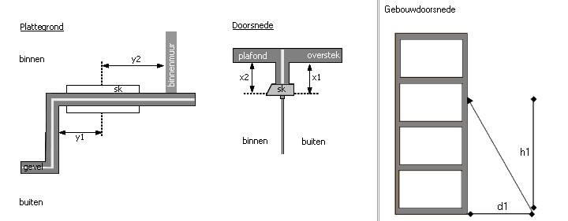
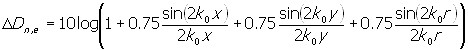
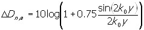
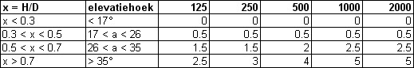

|
Top Previous Next |
|
CORRECTIE VOOR DE POSITIE VAN EEN VENTILATIEVOORZIENING (Cpositie) De geluidsisolatie van ventilatievoorzieningen wordt per octaafband gecorrigeerd voor de positie ten opzichte van omliggende reflecterende vlakken. De gegevens ten behoeve van deze correcties kunnen worden ingevoerd op de tab Cpositie. De correcties worden altijd van de DneA afgetrokken en verslechteren derhalve per definitie de geluidisolatie van de ventilatievoorziening.
Tab Cpositie
CORRECTIE VOOR DE INBOUWHOOGTE VAN EEN VENTILATIEVOORZIENING (Celevatie) De geluidsisolatie van ventilatievoorzieningen wordt per octaafband gecorrigeerd voor de hoogte in de gevel. De gegevens ten behoeve van deze correcties kunnen worden ingevoerd op de tab Celevatie. De correcties worden altijd van de DneA afgetrokken en verslechteren derhalve per definitie de geluidisolatie van de ventilatievoorziening. Opgemerkt wordt dat deze correctie pas van invloed is als de afmeting D ten minst 10 meter bedraagt.
Tab Celevatie
Op tab Celevatie respectievelijk tab Cpositie kan een scherm met de knop [Detail] worden opgeroepen. In dit scherm kunnen de correcties op de geluidisolatie ten gevolge van de invalshoek van het geluid en het effect van reflecties via een nabijgelegen vlak worden berekend.
Meer informatie over de interpretatie van Cpositie en Celevatie staat in bijlage 4 van de handleiding.
Scherm Cpositie en Celevatie 
CORRECTIE VANUIT STATISTISCHE OVERWEGINGEN (Cveilig) De isolatiewaarde van alle elementen kan per octaafband worden gecorrigeerd. Nadat een element is toegevoegd worden bij Cveilig de waarden uit de voorkeursinstellingen overgenomen. Indien gewenst kunnen deze waarden per element en per octaafband worden aangepast. Op alle ventilatievoorzieningen wordt een Cveilig van 1.5 dB op de laboratoriumwaarde toegepast. Deze standaardinstelling kan worden gewijzigd in het scherm Voorkeursinstellingen. Daarbij wordt opgemerkt dat indien Cpositie en Celevatie worden toegepast een additionele correctie van 1.5 dB niet noodzakelijk is.
Tab Cveilig
* Opgemerkt wordt dat de beginfrequentie afhankelijk is van de keuze in het projectscherm.
Aanbevolen wordt om een correctie van 1.5 dB toe te passen op in het laboratorium verkregen geluidsisolatiewaarden van beglazingen. Het is bekend dat beglazing met eenzelfde opbouw een spreiding van 1 à 2 dB vertoont in de meetresultaten. Overige correcties dienen naar eigen inzicht en ervaring te worden toegepast.
In NPR 5272 staat een aantal tabellen die een richtlijn geven voor de waarde van Cpositie en Celevatie. In NPR 5272 wordt echter voor deze correcties geen rekenmodel gegeven dat kan worden gevalideerd. Derhalve is op basis van de aanwijzingen in NPR 5272 en NEN-EN 12354-3 een interpretatie gegeven van de bedoelde correcties. In NPR 5272 wordt niet aangegeven hoe met waarden die niet in de tabellen staan moet worden omgegaan. Daarnaast worden alle waarden afgerond op veelvouden van 0.5 dB zonder dat de afrondingsregels bekend zijn.
Voor Cpositie is uitgegaan van de formules uit bijlage D van NEN-EN 12354-3 met behulp van de formule 1 tot en met 3. algemeen :  (1)als y = 0 : (2) als x = 0 :  (3)
Negatieve correcties die in de NPR 5272 wel voorkomen zijn afgerond naar 0 dB.
Voor Celevatie is uitgegaan van tabel A.12 uit NPR 5272. echter in deze tabel wordt voor vijf domeinen vier waarden gegeven! Dit is vooralsnog als volgt geïnterpreteerd:

|